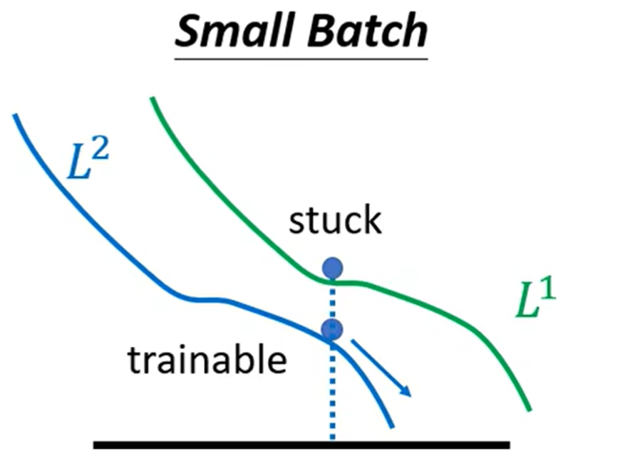

L2. What to do if my network fails to train
[TOC]
General Guide
- 检查Training Loss
- Training Loss大
- Model Bias
- 模型不够复杂
- 提高模型复杂度即可
- Optimization
- 可以尝试使用浅层神经网络等容易优化的模型进行训练，若Train Loss比复杂模型更低，说明优化出问题了
- 解释：复杂模型包含了简单模型（多出来的部分全部不训练，剩下的就是简单模型），因此简单模型能做到的Training Loss，对于复杂模型也需要做到
- Model Bias
- Training Loss小
- 检查Testing Loss
- Testing Loss小（这不结束了吗）
- Testing Loss大
- Overfitting
- 增加训练数据
- 数据增强（Data augmentation）
- 减少模型复杂度
- Early Stopping
- Regularization
- Dropout
- Mismatch
- 与过拟合不同，没法使用增加训练数据避免
- 训练数据与测试数据有着不同的分布
- Overfitting
- 检查Testing Loss
- Training Loss大

- 训练数据少，不足以限制模型
- 模型太复杂，过于自由
Optimization Failed
Critical Point

处于局部极值点（极大值、极小值）或鞍点时，梯度值为0，此时没有办法继续更新梯度
Tayler Series Approximation
为了判别critical point，我们要是能够知道损失函数$L(\theta)$的形状就会非常容易
我们考虑使用泰勒展开，对参数$\theta’$周围的损失函数进行近似
$$ L(\theta) \approx L(\theta') + (\theta-\theta')g+\frac{1}{2}(\theta-\theta')^T\times H\times (\theta-\theta') $$$$ L(\theta) \approx L(\theta') + \frac{1}{2}(\theta-\theta')^T\times H\times (\theta-\theta') $$此时取决于最后一项：
- 永远大于0，则$L(\theta) > L(\theta’)$，是局部极小值
- 永远小于0，则$L(\theta) < L(\theta’)$，是局部极大值
- 否则：鞍点
判断$\frac{1}{2}(\theta-\theta’)^T\times H\times (\theta-\theta’)$的正负是一个经典问题
即$\forall v, v^THv > 0$，此时$H$被称为正定矩阵（特征值都是正值）
反之，负定矩阵所有的特征值均小于0
但是每次都需要计算矩阵及其特征值，是一件开销很大的事情
我们考虑从其他方式进行规避鞍点
Batch Size
- 大的Batch会花费更多时间进行计算，但是减少梯度更新次数
- 小的Batch会花费更少时间进行计算，但是增加梯度更新次数

得益于GPU并行计算，batch在不是非常大的时候，多条数据计算loss计算梯度是并行的，因此时间非常少
但是小的batch确确实实需要更多次梯度更新，因此小的batch事实上在单个epoch上花费时间更大

但是似乎小的batch可以对Optimization带来更好的效果
每次使用不同batch的数据进行更新，某种程度上引入了噪声
在第一份batch上进入鞍点，但是对于第二份就不一定是鞍点

甚至你会发现，小batch训练出来的模型，泛化性能更好，在测试集上表现更好
一种比较玄学的解释：
极值点有平坦的、陡峭的两种（如图左、右）
由于测试集多少与训练集有一些mismatch，如果是平坦的极值点，稍微的偏移不会引起损失函数变化太多
而陡峭的极值点会表现糟糕
小batch在训练时引入的噪声，非常跳脱，峡谷很难困住其更新方向
而大batch的梯度下降方向稳定，因此容易进入陡峭的峡谷
Learning Rate

非常多时候Loss并不是卡在critical point
我们观察训练末期的梯度，发现并不是0
原因是在山谷之间来回跳动，无法下降

- 学习率较大，会在山谷来回跳（左图）
- 学习率较小，在稍微平坦的地方完全走不动（右图）
因此一般的梯度下降很难进入critical point
我们考虑自适应学习率
- 陡峭的地方学习率高
- 平坦的地方学习率低
梯度的更新应该由
$$ \theta^{t+1} =\theta^t - \eta g^t $$转变为：
$$ \theta^{t+1} =\theta^t - \frac{\eta}{\sigma^t}g^t $$Root Mean Square（Adagrad）

及对应维度上的梯度均方根作为分母
但是这样的方法不够灵活
有时候同一个维度，在不同时间点可能又陡峭又平缓，因此需要更加灵活、动态变化的学习率
RMSProp+Adam

定义权重$\alpha$，每次结合上一次的$\sigma^{t-1}$与当前梯度进行计算
$$ \sigma^{t} = \sqrt{\alpha(\sigma^{t-1})^2+(1-\alpha)(g^t)^2} $$但此时我们仍然无法解决卡在critical point的问题
Adam = RMSProp + Momentum
Momentum
我们考虑在优化时引入动量的概念

物体在下降时，到达谷底仍拥有一定的动量，还会沿之前的方向继续冲一会
这样有机会冲到更低的极值点

并且：每次移动的$m_i$都可以表示为之前所有梯度的综合（一个关于$g_0,g_1,…$的式子）
Adam
结合 RMSProp + Momentum，我们就得到了Adam
Momentum：
$$ \theta^t = \theta^{t-1} - \eta m^t\\ m^t = \beta m^{t-1} + (1-\beta)g^{t-1} $$RMSProp:
$$ \theta^t = \theta^{t-1} - \frac{\eta}{\sigma^t}g^{t-1}\\ \sigma^{t} = \sqrt{\alpha(\sigma^{t-1})^2+(1-\alpha)(g^t)^2} $$结合一下，Adam：
$$ \hat m^{t} = \frac{m^t}{1-\beta}\\ \hat \sigma^t = \sqrt{\frac{(\sigma^t)^2}{1-\alpha}}\\ \epsilon = 10^{-8}\\ \theta^t = \theta^{t-1} - \frac{\eta}{\hat \sigma^t + \epsilon}\hat m^{t} $$-
同时兼顾方向与步长：
- Momentum 负责确定更新方向（加速收敛）：在陡峭的地方始终保持总体方向，防止偏航
- RMSProp 负责调整步长（自适应学习率）：调整每一步的大小，走的更稳
Learning Rate Scheduling

我们采用Adagrad，此时就可以进行正常的下降
但是会出现奇怪的波动
$$ \sigma^{t} = \sqrt{\frac{1}{t+1}\sum_k (g^k)^2} $$刚进入平坦区时，得益于一开始积累了下降的较高梯度

$\sigma_y$仍然可以维持在一个比较大的范围
但随着迭代次数增加，$\sigma_y$每次只能加上非常小的梯度，平均值不断变小，最终引起了学习率爆炸
如何解决这个问题呢
$$ \theta^{t+1} =\theta^t - \frac{\eta}{\sigma^t}g^t $$我们除了对$\sigma$进行变化，我们可以本身对$\eta$进行变化
即随着时间，$\eta$慢慢变小
时间越长，本身肯定也已经离终点越来越近，因此就会抵消之前的梯度积累
或者变大再变小
- Learning Rate Decay

- Warm Up

Warm Up貌似更黑科技一点
Warm Up可能的解释：
- 一开始希望多收集周围的梯度信息，因此不希望走太快
- 信息足够后，开始正式的大踏步前进